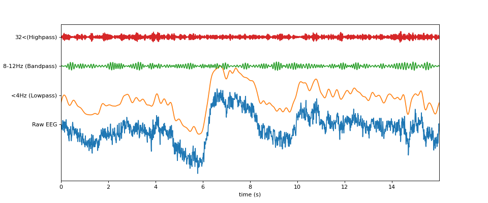

spkit.filter_X¶
- spkit.filter_X(X, fs=128.0, band=[0.5], btype='highpass', order=5, ftype='filtfilt', verbose=False, use_joblib=False, filtr_keywors={})¶
Spectral filtering using Buttorworth
Buttorworth filtering - basic filtering
Wrapper for spectral filtering.
- Parameters:
- Xarray, 1d, 2d, (n,) or (n,ch),
input signal single channel (n,) or multi-channel, channel axis should be 1 shape ~ (n,ch)
- fs: scaler, default=128
smapling frequency
- band: list of one or two scaler values.
cut of frequency, for lowpass and highpass, band is list of one, for bandpass list of two numbers
- btype: str, {‘highpass’,’lowpass’,’bandpass’,’bandstop’}
band of filter
- order: int, positive, default=5,
order of filter
- ftype: {‘filtfilt’, ‘lfilter’, ‘SOS’, ‘sosfilt’,’sosfiltfilt’}
filtering approach type, ‘SOS’ is mapped to ‘sosfiltfilt’
lfilter is causal filter, which introduces delay, filtfilt does not introduce any delay, but it is non-causal filtering
SOS: Filter a signal using IIR Butterworth SOS method. A forward-backward digital filter using cascaded second-order sections. NOTE: ‘SOS’ is Recommended
- Returns:
- Xf: filtered signal of same size as X
See also
filter_smooth_sGolaySmoothing signal using Savitzky-Golay filter
filter_smooth_gaussSmoothing signal using Gaussian function
filter_smooth_mollifierSmoothing signal using mollifier
filter_with_kernelFiltering signal using provided kernel
filtering_pipelineFiltering pipeline
filter_powerlineFiltering out the powerline interference
wavelet_filteringWavelet Filtering
Notes
Filtering using Buttorworth
References
wikipedia - https://en.wikipedia.org/wiki/Butterworth_filter
Examples
import numpy as np import matplotlib.pyplot as plt import spkit as sp x,fs = sp.load_data.eeg_sample_1ch() t = np.arange(len(x))/fs x1 = sp.filter_X(x.copy(),fs=128.0, band=[4], btype='lowpass',ftype='SOS') x2 = sp.filter_X(x.copy(),fs=128.0, band=[8,12], btype='bandpass',ftype='SOS') x3 = sp.filter_X(x.copy(),fs=128.0, band=[32], btype='highpass',ftype='SOS') X = np.c_[x,x1,x2,x3] plt.figure(figsize=(12,5)) plt.plot(t,X + np.arange(X.shape[1])*50) plt.xlim([t[0],t[-1]]) plt.yticks(np.arange(X.shape[1])*50, ['Raw EEG','<4Hz (Lowpass)', '8-12Hz (Bandpass)','32<(Highpass)']) plt.xlabel('time (s)') plt.show()

Examples using spkit.filter_X¶

ATAR: Automatic and Tunable Artifact Removal Algorithm
EEG Artifact removal using ATAR


Independed Principle Component analysis